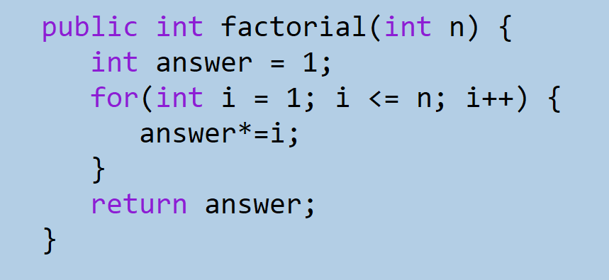
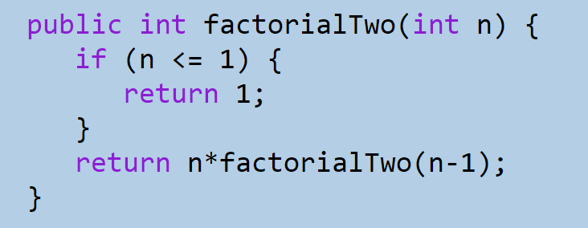

Imagine peeling an onion apart, layer by layer. Or opening Russian nesting dolls to reveal the inner dolls. Or even calculating the factorial of a number. What might all of these have in common? Well, they're all examples of recursion.
You may have heard of recursion before when talking about merge sort, and can also be used to implement a recursive binary search. But what exactly is recursion? Recursion is a strategy in many coding languages that occurs when a method calls itself within itself,

in order to break down and solve a problem. A common example of recursion is when dealing with factorials. If we asked a computer to solve for 10! we could use a for loop, as demonstrated to the left.
Or, we could break it down. We know that 10! = 10 * 9! = 10 * 9 * 8! etc. And, we know that 1! = 1. So, we could use this knowledge and write a recursive function, like the one demonstrated to the right.But what's to stop a recursive function from calling itself over and over? A base case! A base case is the basic condition under which the function stops calling itself. In the factorial example above, the base case is when n <= 1, because all factorial calls will eventually boil down to 1!. Without a base case, the function would just keep calling itself until it reaches a number of calls that the computer can't handle, at which point the program would throw a StackOverflow exception, which just means that there were too many calls.
Common mistakes
When implementing recursion, there are a few notable mistakes to avoid. One of the most common mistakes is forgetting the base case. Even if the recursive portion of the method is correctly implemented, without the base case, the program will just crash. That being said, it can also be challenging to correctly break down the problem into a recursive format. Making sure that the correct recursive call is being made is also important. Coming back to the factorial example, if the method returned n*factorialTwo(n) it would also cause a stack overflow, since the base case would never be reached. The best way to learn how to make the correct recursive call to make is just to practice, practice, and practice, and train yourself to think recursivly instead of iteratively, using loops.
Additionally, recursion is pretty expensive (McKenzie, 2021) in terms of optimal performance. It may be cheaper for the computer to merely implement an iterative format instead of a recursive one. Despite this, recursion is still an important concept to understand, as it can help change the way you approach a problem, and provide another possible tool for future programming projects.